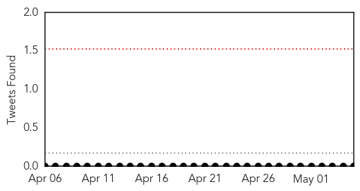
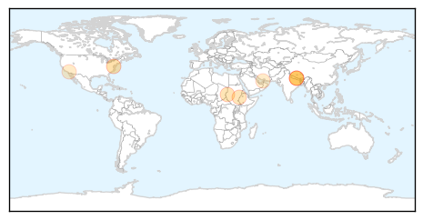

30 Day Trends
Web: 0 alerts, 0 warnings
Twitter: 0 alerts, 0 warnings
Top Articles:
- 0.977
- Rubella Could Make a Comeback to Western Hemisphere
- 0.966
- WHO briefs partners on Nepal earthquake - Nepal
- 0.856
- Sudan measles outbreak prompts UN alarm
- 0.827
- In Sudan, Aid Groups Struggle With Massive Measles Outbreak
- 0.725
- Nepal faces risk of measles outbreak: Unicef
- 0.675
- UNICEF and EU begin airlift of 80 metric tonnes of humanitarian supplies to quake-hit Nepal
- 0.647
- Possible measles case at Washington Charter
- 0.645
- UNICEF and EU begin airlift of 80 metric tonnes of humanitarian supplies to quake-hit Nepal
Top Tweets:
-
No tweets found for May 05, 2015
Web/News Articles

Tweets
Article Locations
Article Confidences